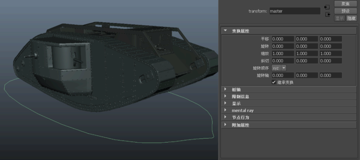
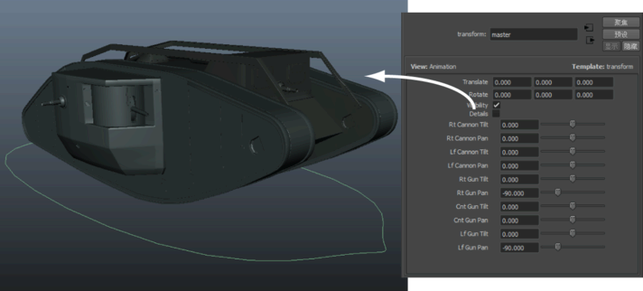
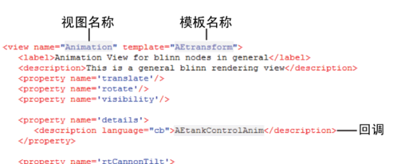
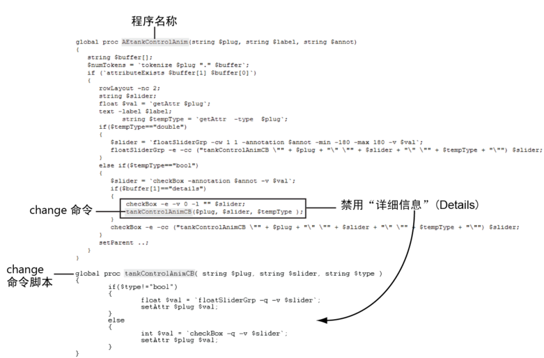

您可以使用回调将属性链接到一个执行任意数量函数的复杂脚本。例如，使用回调脚本，可以通过影响场景的方式调整“属性编辑器”(Attribute Editor)控件。
下图中显示在 Maya 中创建的坦克。该坦克的主节点处于选中状态，且该坦克在“属性编辑器”(Attribute Editor)中以默认视图显示。

下图中选择了名为
“动画”(Animation)的视图。此视图已进行自定义，可满足动画师的需求。例如，已禁用
“细节”(Details)属性。因此，场景中隐藏了坦克的细节。

此视图已在名为
AETransformTemplate.xml 的自定义模板中创建，它会调用一个名为
AEtankControlAnim 的程序：

AEtankControlAnim 可在 MEL 或 Python 中创建（请参见创建自定义属性控件）并包含回调脚本。
回调脚本可完成两个任务：
- 根据属性类型创建控件。
例如，
“细节”(Details)属性的属性声明中包含以下代码行：
<attribute name='details' type='maya.bool'>
由于类型为
maya.bool，因此
“属性编辑器”(Attribute Editor)创建了一个复选框。有关类型的列表，请参见
属性类型。
- 当更改控件的值时，将运行另一个脚本，即更改命令。这样，可以保持“属性编辑器”(Attribute Editor)与属性同步。
为了更改
“细节”(Details)属性，在
AEtankControlAnim 程序中又添加了几行代码。

名为
tankControlAnimCB 的更改命令启动另一个脚本，从而确保在
“属性编辑器”(Attribute Editor)布局中关闭
“细节”(Details)复选框。